7210A40 R.R. LOWER FRONT STRUT/SIDE PANEL LEVEL 1 (PARTIAL) (ONE) LEFT OR RIGHT
- Path
- Procedures > 72 PANELS AND FRAMES > 7210 REMOVING-REFITTING > 7210A STRUCTURAL ELEMENTS (FRONT PART) > 7210A40 R.R. LOWER FRONT STRUT/SIDE PANEL LEVEL 1 (PARTIAL) (ONE) LEFT OR RIGHT
- Kind
- repair procedure (removal / refitting; the operation number is the code)
- Applies to
- all engines; all production periods
- Interactive page
- https://sloeber94.github.io/elrnDB-fCrm/en/#/194001218
Applies to: all engines; all production periods
 Removing
Removing
 Refitting
RefittingOp. 7210A15 R.R. FRONT WING/HEADLAMP HOUSING CROSSMEMBER
Op. 7210A18 R.R FRONT CROSSMEMBER
- Check that the components connected are not distorted by checking the bodyshell alignment measurements using suitable equipment (gauges, templates or jigs).
- Straighten the body as necessary.
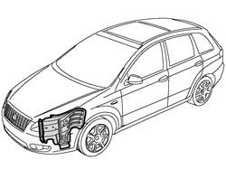
Applies to: all engines; all production periods
1. Use a hot air blower and a wire brush to remove the sealant.
2. Use a hack sawing machine following the cutting line shown in the diagram.
3. Remove the cut end of the strut.
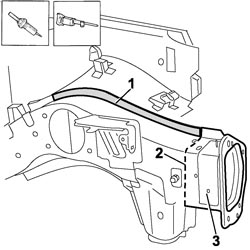
Applies to: all engines; all production periods
- Use the rotary brush to remove the paint to access the spot welds.
1. Use a hack sawing machine following the cutting line shown in the diagram.
2. Use the drill and chamfer the spot welds not accessible with the chamfering machine.
3. Use the chamfering machine on the spot welds shown in the diagram.
4. Use an oxyacetylene torch and wire brush to unsolder the brazing shown in the diagram.
- Use the hammer and chisel and remove the spot welds chamfered previously.
5. Remove the outer part of the side panel/strut.
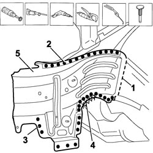
Applies to: all engines; all production periods
- Straighten the edges of the bodyshell using a hammer and dolly block.
- Remove the spot weld residues using a disc grinder.
- Use a rotary brush to clean the areas treated previously.
1. Apply electro-galvanizing paint.
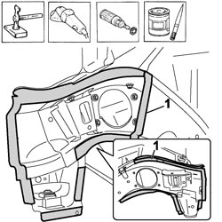
Applies to: all engines; all production periods
1. Work at the bench and cut the inner part of the replacement strut as necessary.
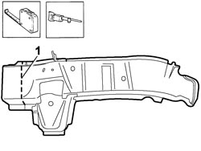
Applies to: all engines; all production periods
1. Offer up the cut inner part of the replacement strut, mark and carry out the cutting on the part of the strut remaining on the vehicle.
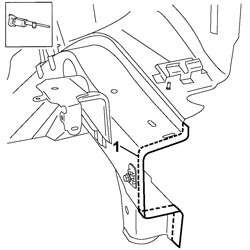
Applies to: all engines; all production periods
1. Work at the bench and cut the outer part of the replacement side panel/strut as necessary.
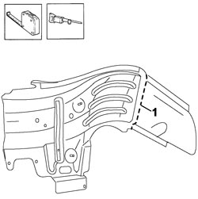
Applies to: all engines; all production periods
1. Offer up the cut outer part of the replacement side panel/strut, mark and carry out the cutting on the part of the side panel/strut remaining on the vehicle.
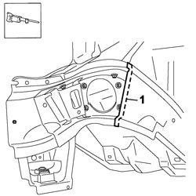
Applies to: all engines; all production periods
- Remove the anti-corrosion treatment from the three replacements parts using a rotary brush on both the inside and the outside.
1. Apply electro-weldable paint to the edges treated previously.
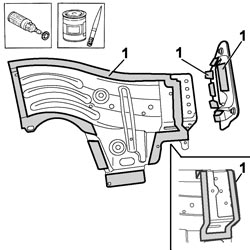
Applies to: all engines; all production periods
Refitting
Removing1. Apply sealant to the area shown in the diagram on both the inside and the outside edge of the turret panel.
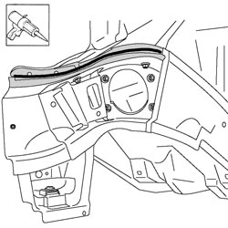
Applies to: all engines; all production periods
1. Position the outer half panel correctly on the vehicle and secure it using self-locking clamps.
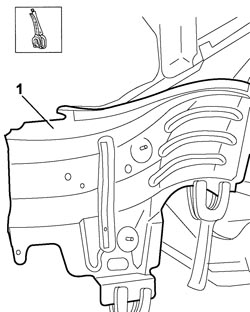
Applies to: all engines; all production periods
1. Position the inner half panel correctly on the vehicle.
2. Fit the flange in place and tack it with several spot welds.
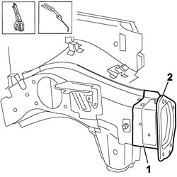
Applies to: all engines; all production periods
2. Fit the crossmember provisionally checking the alignment of the fastening openings.
- Remove the headlamp housing crossmember and the crossmember.
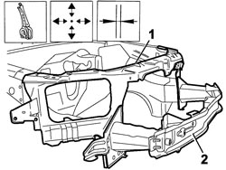
Applies to: all engines; all production periods
1. Use a spot welder in the areas shown in the diagram.
2. Use the MIG welder to fill weld at the points shown in the diagram.
3. Use the MIG welder to weld along the join line with the outer side panel.
4. Use a spot welder in the areas shown in the diagram.
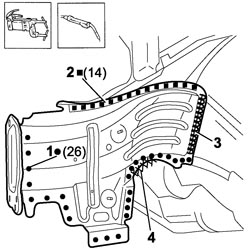
Applies to: all engines; all production periods
1. Use the oxyacetylene torch and braze the points shown in the diagram.
2. Use a spot welder in the areas shown in the diagram.
3. Use the MIG welder to weld along the join line with the inner side panel.
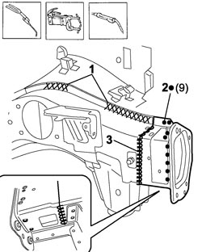
Applies to: all engines; all production periods
- Correct any distortions to the panel using a hammer and dolly block.
- Use a disc grinder to level and remove the welding.
- Use a rotary brush to clean the areas welded previously.
1. Apply anti-oxidant protection to the areas involved in the welding.
- Seal the join lines between the replacement part and the vehicle.
- Apply the underbody protection.
- Proceed with the painting stage.
2. Apply the wax protection.
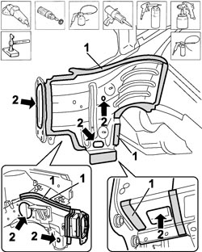
Applies to: all engines; all production periods